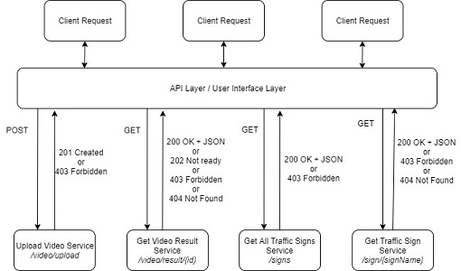

WTra. Web Traffic Signs
Who We Are
Hi,
We are Andreea Prodan and Dan-Gabriel Cazacu, two students at Faculty of Computer Science from Iasi.
We are following Software Engineering master studies.
What is this page about

Currently we are following Web Application Development course sustained by Sabin-Corneliu Buraga and this page will be used to keep track of Web Traffic Sign project evolution .
This project is about creating a (micro-)service-base Web system able to detect traffic signs from a video received as input.
As sign recognition system will be used an existing open source project, the scope of the project being the creation of an OWL ontology and the creation of SPARQL end-point(s) for offering information about road signs: type, legal regulation, context of use, etc.
Status week 9 - D component of the project

We created the architecture.
The main idea that the user will have to upload a video, and will receive a http status 201 created, if the upload will be with suceess, or 403 forbidden if the user is not authenticated.
The user will also could get all traffic signs from database. Same as above, only that he will receive 200 OK and the JSON list with the traffic sings if everything worked well.
Also he will be able to get traffic signs list that were found in a video, by the video id, and get traffic sign information by traffic sign id.
LogIn / Register
The user has to register first in order to have access to the application. The password will be sent encoded in Base64. The database used for storing the users is AmazonRDS.
After registration the user can log in to use the available services. A token will be generated and stored in cookies for security reasons. The token is set to expire after 1 minute. Without this token, the user has not rights to upload videos.
After LogIn
OWL ontology
OWL ontology was developed by using Protege 5.5.0 There are 5 types of traffic signs (which are subclasses of Traffic Signs):
Each type of sings has defined some traffic signs that are part of it. Each sign has properties as applicableTo (Driver/Pedestrian), hasForm, hasBackgrondColor, hasBorderColor so can be defined with different properties. For example a sign can have red border and white background in Romania, but black border and yellow background in Finland.
Also in OWL was defined the class Country with only a few countries added at this moment. Each country has a code (known by anyone and international) and also has object properties hasSign and hasNotSign as there are countries were some of the traffic signs are not applicable to.
Stardog
We configured Stardog on an Amazon EC2 T2.medium machine. At first we couldn't configure Stardog in AWS services so we tried to use Fuseki.We gave more tries to configure (and we succeeded) the Stardog as after some more investigation we saw that is way better - has high performance reasoning, high availability, uses knowledge graphs instead of Fuseki which is used only as RDF storage and query DBMS engine.
Next steps
- OWL ontology can be refined furthermore (e.g.: add more signs, more countries, more properties etc.).
- Create service to detect and recognize the traffic signs
- Add option for user to report signs.
- Integrate the system with other tools (e.g. Waze)